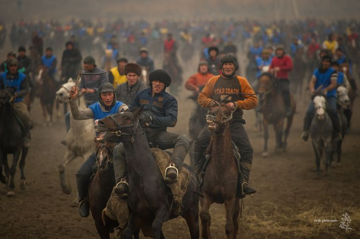

Kupkari (Ulak)

This ancient equestrian sport requires immense bravery, absolute precision, and unparalleled physical skill. For centuries, riders across Central Asia have battled passionately on horseback to secure a goat carcass and carry it straight into the designated target area, proving their ultimate individual strength, strategy, and strategic stamina. The history of Kupkari is deeply intertwined with the nomadic lifestyle of the Uzbek ancestors, serving not only as a rugged form of military training but also as a highly celebrated entertainment centerpiece for weddings and spring festivals across towns like Namangan.
Kurash Wrestling
.jpg)
With an exceptional history officially dating back over 3,500 years, Kurash stands proud as a traditional form of upright wrestling deep within the cultural DNA of Uzbekistan. It remains a sport of pure elite technique and profound mutual respect, where any form of striking, kicking, or ground fighting is strictly forbidden by the historic rules. Modern spectators and global martial arts experts alike admire the simple elegance of Kurash, where wrestlers rely completely on upper body shifts, clothing grips, and precise balancing throws to outmaneuver their opponents onto the mat cleanly.